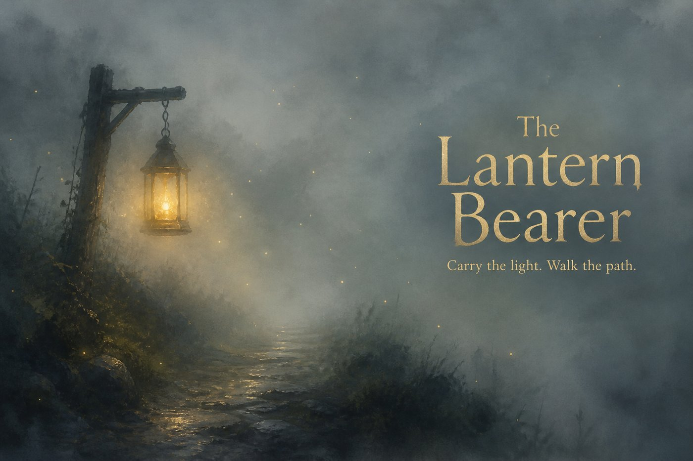

Snack Quests

Tap to continue
How to play
Carry the lantern. Walk the path through the mist.
A / D
or
← / → Arrows
to walk • Share your light — awakened travelers will join your journey
✦
LIGHT
☀
GREET